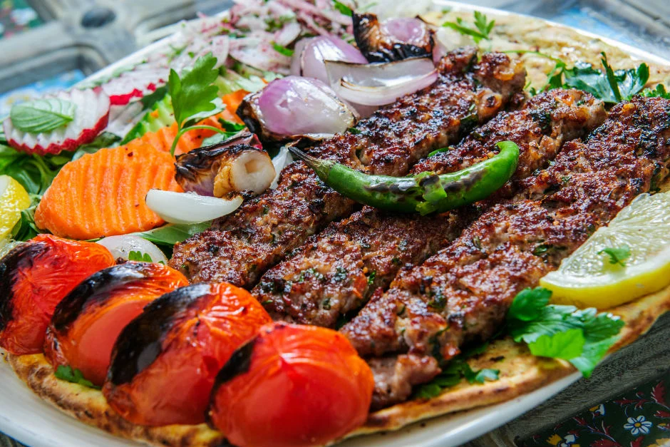
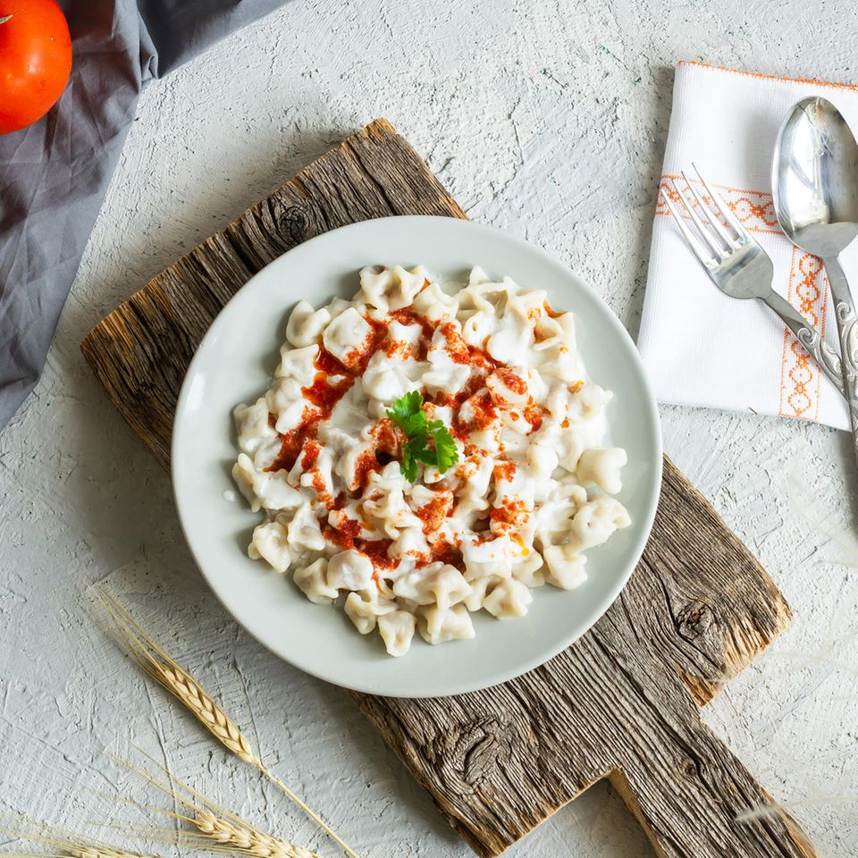
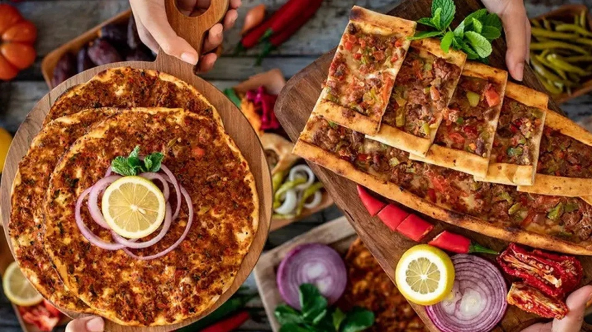
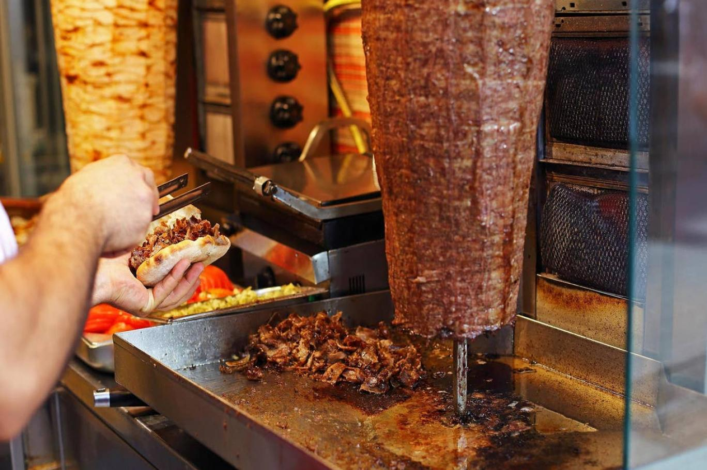
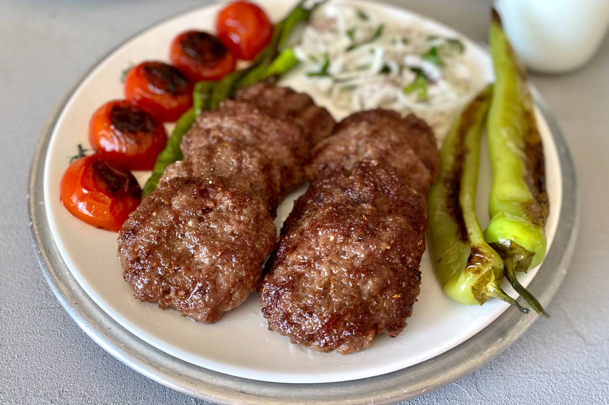
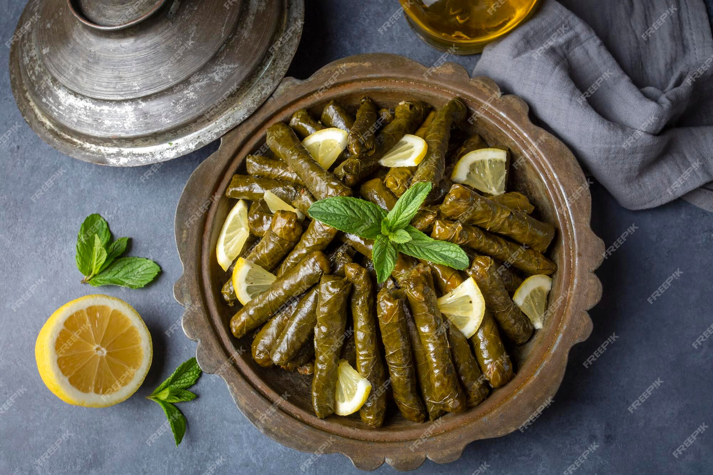
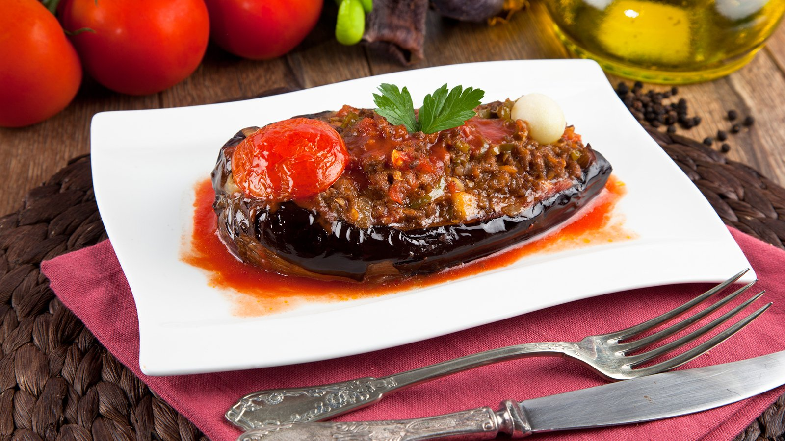

Kebap
Kebap, Orta Doğu ve Orta Asya mutfağının önemli bir parçası olan, etin çeşitli şekillerde pişirilerek servis edildiği bir yemek türüdür. Türk mutfağında oldukça popüler olan kebaplar, genellikle döner, şiş, tandır gibi çeşitli pişirme teknikleriyle hazırlanır. İşte bazı temel kebap türleri:
- Döner Kebap: Genellikle kuzu veya tavuk etinden yapılan ve dikey bir döner ateşte döndürülen bir et bloğundan kesilen ince dilimler halinde servis edilen bir kebap türüdür.
- Adana Kebap: Adana yöresine özgü bir kebap türüdür. Genellikle dana veya kuzu etinden yapılır, baharatlarla zenginleştirilir ve ince uzun şişlere şekil verilerek mangalda pişirilir.
- Urfa Kebap: Urfa'nın özgün lezzetlerini taşıyan bir kebap türüdür. Adana kebaba benzer şekilde mangalda pişirilir, ancak baharat karışımı ve kullanılan et türü farklıdır.
- İskender Kebap: Döner kebap dilimleri, üzerine tereyağlı domates sosu ve yoğurt eklenerek servis edilen bir Türk kebap klasiğidir.
- Şiş Kebap: Genellikle dana, kuzu veya tavuk eti, sebzelerle birlikte şişlere dizilerek mangalda pişirilen bir kebap türüdür.
Mantı
Mantı, geleneksel bir Türk yemeği olup, küçük bohça şeklinde hamur içinde doldurulmuş et, soğan ve baharat karışımından oluşur. Hamur genellikle un, su ve tuz içerirken iç harcında kıyma, soğan ve baharatlar bulunur. Mantılar kaynar su veya et suyunda pişirilir ve genellikle sarımsaklı yoğurt ve tereyağı sosuyla servis edilir. Türk mutfağının geleneksel ve sevilen lezzetlerinden biridir..
Pide ve Lahmacun
Pide
Pide,Türk mutfağına ait geleneksel bir ekmek türüdür. Yassı ve genellikle oval şekilde olan pide, hamurunun üzerine çeşitli malzemeler eklenerek pişirilir. Pide çeşitleri arasında kıymalı, kuymaklı, sucuklu, peynirli ve pastırmalı gibi farklı lezzetler bulunur. Özellikle Ramazan aylarında iftar sofralarında sıkça tercih edilir. Pide, genellikle közde veya taş fırında pişirilir ve sıcak servis edilir.
Lahmacun
Lahmacun, ince hamurun üzerine kıyma, soğan, biber salçası ve baharat karışımıyla hazırlanan bir Türk mutfağı spesiyalitesidir. Genellikle kırmızı mercimek veya bulgur pilavı, marullar ve limon ile birlikte servis edilir. Lahmacun, adını hamurun içine konulan malzeme karışımından alır ("lahmacun" kelimesi, "etli ekmek" anlamına gelir). Lahmacunlar genellikle fırında veya taş fırında pişirilir ve sıcak servis edilir. Hafif ve nefis bir atıştırmalık olarak bilinir ve Türk mutfağındaki sokak lezzetlerinden biridir.
İskender

İskender, Türk mutfağına ait geleneksel bir et yemeğidir. Genellikle döner kebap dilimleri, tereyağlı domates sosu ve yoğurtla servis edilir. İskender, adını ünlü Bursa'da yaşamış olan İskender Efendi'den almıştır. Yemeğin temelinde döner et bulunur, ancak etin üzerine eklenen özel tereyağlı domates sosu ve yoğurt, İskender'i diğer döner kebaplardan ayıran özelliklerdir. Servis edilirken genellikle lavaş veya ekmek arasına konularak sunulur. İskender, Türk mutfağının önemli lezzetlerinden biridir ve ülke genelinde yaygın olarak tüketilmektedir.
Döner
Döner, Türk mutfağına ait bir yemektir. Kuzu, dana veya tavuk etinden yapılan döner, dikey bir ızgarada dönerek pişirilir. Genellikle pide veya lavaş ekmeğiyle servis edilir ve içine yeşillik, domates, soğan ve soslar eklenir. Hızlı bir yemek alternatifi olarak bilinir ve dünya genelinde popülerdir.
Köfte
Köfte, et veya sebzelerin karıştırılmasıyla yapılan bir yemektir. Türk mutfağındaki köfte çeşitleri, genellikle dana kıyması, ince bulgur, soğan, baharatlar ve tuz içerir. Hazırlanan karışım şekillendirilerek servis edilir ve limon, maydanoz gibi garnitürlerle sunulabilir. Türk köftesi çeşitleri arasında çiğ köfte, ıslak köfte, İnegöl köfte gibi farklı lezzetler bulunur. Köfte, Türk mutfağının önemli bir parçasıdır ve paylaşımı simgeler.
Sarma
Sarma, iç harcın yapraklarla sarılmasıyla oluşan geleneksel bir dolma türüdür. Üzüm yaprakları genellikle kullanılır, iç harç ise pirinç, kıyma, soğan ve baharat içerir. Yapraklar haşlanarak veya salamura halinde kullanılabilir. Sarma genellikle tencere veya güveçte pişirilir ve soğuk olarak servis edilir. Lahana, pazı veya kuru yapraklarla yapılan çeşitleri bulunur. Garnitür olarak yoğurt veya zeytinyağlı sos eklenerek tüketilir.
Karnıyarık
Karnıyarık, Türk mutfağına ait geleneksel bir yemektir. Patlıcanın yarılarak içine doldurulan kıymalı harç ve üzerine domates sosu ile hazırlanır. Fırında veya ocakta pişirilerek servis edilir. Besleyici ve lezzetli bir yemek olarak bilinir, genellikle pilav veya ekmekle birlikte servis edilir.